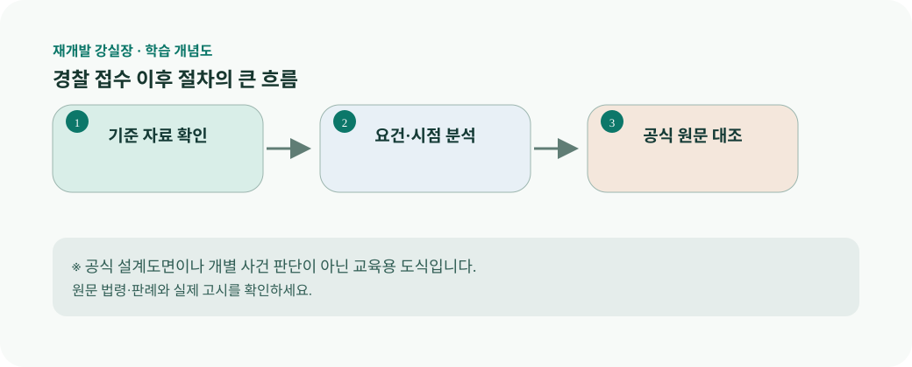

경찰 접수 이후 절차의 큰 흐름 강의 슬라이드재개발 강실장 · 교육 콘텐츠 / 개별 감수 전경찰 접수 이후 절차의 큰 흐름
신고·고소 접수 후 사실 확인, 증거 수집, 사건 처리 등이 이어질 수 있다. 사건 상태와 진행 여부는 공식 통지로 확인한다.
학습 개념도

법적 효력을 갖춘 공식 도면이 아닌 교육용 도식입니다.
1 / 7오늘의 핵심 쟁점
신고·고소 접수 후 사실 확인, 증거 수집, 사건 처리 등이 이어질 수 있다. 사건 상태와 진행 여부는 공식 통지로 확인한다.
2 / 7법조문을 읽는 순서
형사소송법 제237조(고소, 고발의 방식)을 출발점으로 읽습니다. 조문의 주어와 행위, 요건, 예외를 나누어 표시한 뒤 적용일과 지자체 조례·정관·인가 조건을 별도로 대조합니다. 같은 정비사업이라도 사업유형과 진행 단계가 다르면 결론이 달라질 수 있습니다.
3 / 7현장형 가상 사례
접수번호·접수일·담당기관을 기록하고 추가 자료 제출 여부를 정리한다. 사례는 개인이나 특정 조합을 지칭하지 않는 학습용 가정입니다.
4 / 7문서를 보는 실무 방법
시간순 사건표에서 확인된 사실만 표시한다. 특히 서로 다른 시점의 자료는 덮어쓰지 말고 원본을 보존합니다. 사실 확인 항목에는 근거 문서의 작성기관·작성일·공식 URL을 함께 적습니다.
5 / 7자료 체크리스트
우선 확보할 자료는 접수증, 통지서, 제출자료 목록입니다. 개인정보와 비공개 사업정보는 권한과 공개 범위에 맞게 취급하고, 확인되지 않은 증빙은 별도 표기합니다.
6 / 7자주 범하는 오류
접수 자체를 혐의가 인정된 것으로 오해하지 않는다. 단순한 불만이나 비용 차이가 곧바로 형사범죄 또는 무효 사유가 되는 것은 아닙니다.
7 / 7강실장의 핵심 정리
이 강의의 도식은 “형사 사실 지도”입니다. 사실·증거·추론·법률요건을 분리한다. 특정인을 피의자나 범죄자로 단정하거나 고소장 대필을 하지 않는다. 글은 교육용이며 소장·고소장 등의 구체적 사건별 문서를 작성해 주지 않습니다.